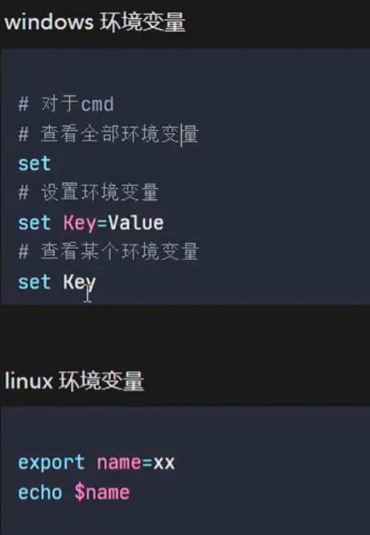

Viper：配置读取与热更新
Viper 是 Go 语言中最流行的配置管理库之一，可以把它想象成一个集中的配置管理员，负责处理应用所需的所有配置。
它最核心的价值在于：将多种来源的配置（文件、环境变量、命令行参数等）统一管理，并提供一个简单、一致的读取方式。
go get github.com/spf13/viper
viper配置结构体 , 使用的映射字段, 配置文件不用多说,怎么映射你怎么写;
JSON mapstructure:"xxx" : {"app": {"name": "myapp"}}
YAML mapstructure:"xxx"
app:
name: myapp
TOML mapstructure:"xxx"
[app]
name = "myapp"
type Config struct {
App struct {
Name string `mapstructure:"name"`
} `mapstructure:"app"`
}
viper.SetConfigFile(path) 指定配置文件路径
viper.ReadInConfig() 读取文件内容
viper.Unmarshal(&cfg) 根据 mapstructure 标签，把配置塞进结构体
func load(path string) (*Config, error) {
viper.SetConfigFile(path)
if err := viper.ReadInConfig(); err != nil { --> 调用了read方法会直接保存数据在viper中内存中
return nil, fmt.Errorf("read config %w", err)
}
var cfg Config
if err := viper.Unmarshal(&cfg); err != nil {
return nil, fmt.Errorf("unmarshal config %w", err)
}
//上面是直接实现的主动映射
// 直接获取单个值的单个例子
name := viper.GetString("app.name")
return &cfg, nil
}
使用于以上的全部写法 ;
设置读取值
设置
viper.SetDefault(key : "name" ,value: "17hwliao")
viper.Set("age" , 11)
获取
viper.Get(key : "name".(String)) : 可以实现断言 ;
注意 :
1. 对key值的大小写是不敏感的 ;
2. 会有优先级设置, 最低的 SetDefault() . 最高的 Set() , 区分 高, 同级可以覆盖 , 低无法覆盖高的 ;
读取配置文件
- 写配置文件
Viper.Set("name" , "17hwliao")
Viper.Set("age" , "17")
Viper.Set("likes" , "17hwliao")
type Info struct{
Addr string `json:"addr"`
like []string `json:"like"`
}
var info = Info{
Addr : "gg" ,
Like : []string{"c" , "t", "r" , "l"}
}
viper.SetDefault("info" , info)
viper.SetConfigType("json")
viper.WriteConfigAs("config.json")
// 将当前配置写入指定路径的文件，如果文件不存在会创建，如果存在会覆盖。文件扩展名决定格式。
viper.WriteConfig("config.json")
// 将当前配置写入之前设置的配置文件路径。如果之前没有设置配置文件路径，会报错。
三巨头 :
Viper.SetConfigType("json")
Viper.WriteConfigAs("config.json")
Viper.SetConfigType("yaml")
Viper.WriteConfigAs("config.yaml")
Viper.SetConfigType("toml")
Viper.WriteConfigAs("config.toml")
- 读配置文件
viper.setConfigType("json")
viper.SetConfigFile("config.json")
viper.ReadInConfig().var --> err
if err!=nil{fmt , return }
//简单的修改
viper.WriteConfig() //直接修改
viper.SafeWriteConfig() --> 存在的时候就不会写入
监控配置文件
viper.SetConfigType("yaml")
viper.SetConfigFile("config.yaml")
viper.WatchConfig() // 实现监控文件 ;
viper.OnConfigChange(func(e fsnotify.Event){
fmp(e.Name, e.Op)
这里可以直接使用viper(key : "") , 然后之后修改这个key的时候会主动输出修改之后的值;
})
select {}
fsnotify.Event : 文件系统事件 : Name(文件名) 和 Op(操作类型 : 写入/创建/删除等操作) ;
select {} : 空的select 可以实现阻塞当前的goroutine , 防止主函数的main退出;
可以单独创建一个新的 ov := viper.New() ; 创建新的 viper ;
使用 ov.ReadInConfig() -> 可以实现读入旧的数据信息;
注意 , 单次运行下的多次修改, 旧的数值只会记录一次即为创建时候 Key 的数据信息 ;
从环境变量读取配置
viper.AutomaticEnv()
//读取全部的环境变量
viper.SetEnvPrefix("")
//读系统中的一些环境变量
viper.Get("USERNAME") --> 系统用户名
viper.Get("USERDOMAIN_ROAMINGPROFILE") --> 系统电脑名称
viper.Get("ALLUSERSPROFILE") --> 用户数据目录
//指定前缀
viper.SetEnvPrefix("ENV")
fmp(viper.Get("version"))
//指定前缀实际上是 'key' + _ 实现组成的;

命令行读取配置
使用参数运行项目
- pflag.Int/String：定义参数（返回指针）
- pflag.StringVar/IntVar：绑定到已有变量
- pflag.Parse()：解析命令行输入
- viper.BindPFlags：将参数绑定到Viper配置
远程获取配置
ep : etcd 服务
viper.AddRemoteProvider("etcd3" , "ip" , "config/test" )
viper.SetConfigType("json") //配置文件类型
//获取远程配置
viper.ReadRemoteConfig()
if err!=nil{ }
viper.Get("name")